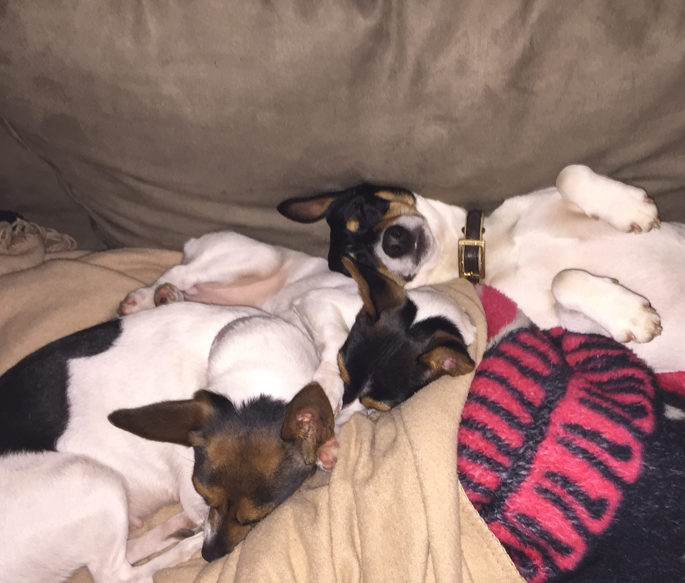
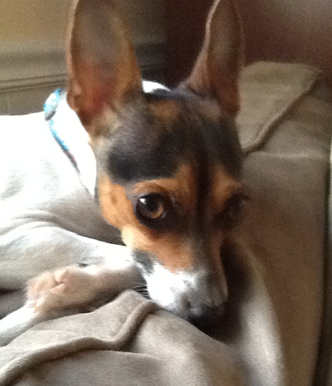
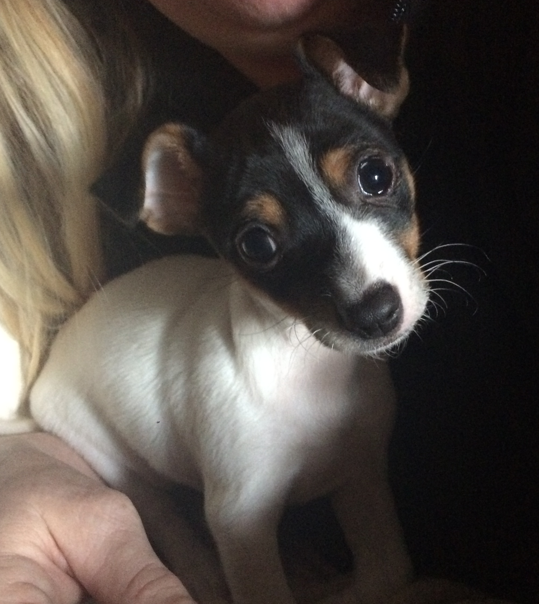
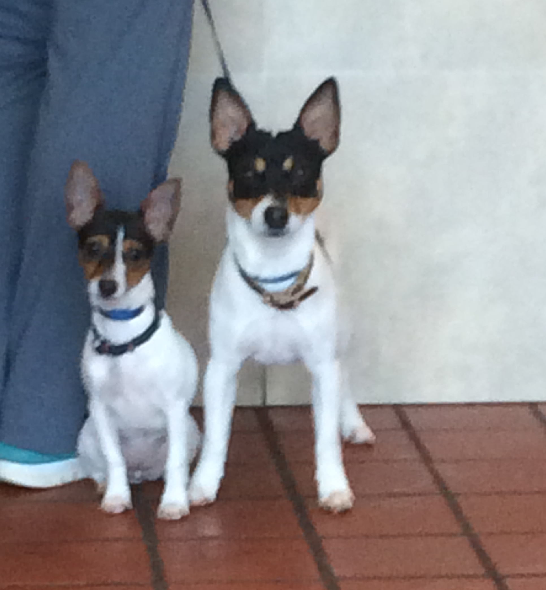
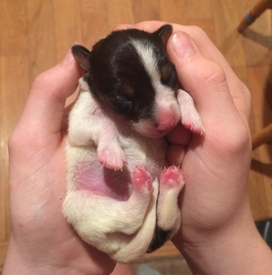

Our Story:
We began in 2011 with one puppy--Bayley. A beautiful puppy that immediately became a family member; loved and cared for by us all. As she grew, we discussed breeding her once and only once. The time was finally right and we found a good stud to breed her with. She had only one puppy but the experience changed us and changed our future.
Bayley had a little girl who we named Sharlotte. We sought out another puppy that we could raise as a stud. So Percy joined our family. The three of them are extremely close. They play tug-of-war, chase each other around the yard, and cuddle together at night. They are members of our family as are the puppies Bayley and Sharlotte have.
It is with great trust that we offer our puppies to be adopted into loving homes. Each puppy has a guarantee of good health. If at any time one of our puppies becomes a burden or is need of another home for any reason, we will happily take them back into our family.

Our Dogs:
Bayley
Santa Claus made a special trip to our house two days before Christmas in 2011 to bring Bayley to our daughter. She was born November 6, 2011, to Dottie and Cody of Barrel Creek Kennel in Middlesex, NC. At a year old, she weighed 10lbs and was about 1ft high.
Sharlotte
Sharlotte was born to Bayley on September 2, 2016. She was a singleton and received EVERYONE'S full attention. She's smaller than her mother, but that doesn't stop her. She chases Percy around the yard constantly. At six months she weighed only 4.8lbs and 8in high.
Percy
Percy (in the center) was born on May 17, 2016, to Sassy Girl and Chaos of Barrel Creek Kennel. He's one solid muscle of dog. If he's not wrestling with Sharlotte, he's chasing a ball or squirrel. At one year old, he weighed 13lbs and stood 1ft and 3in high.
Our Puppies:
This was Sharlotte at 12hrs old being held by my daughter. And Bayley is due with her next litter on June 2. Contact us to get on the list to get first choice of the puppies as soon as they are born and follow your puppy from birth to when they come home full-time.